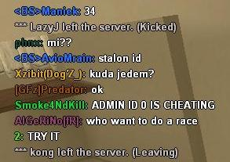

Започнете
From SA-MP Wiki
Contents |
Симнување
За да започнете првин симнете го SA:MP клиентот од оваа страна. Линкот можете да го најдете во http://www.sa-mp.com/download.php - Препорачано е повеќе пати да го посетите ова место за да симнете најнова верзија ако е излезена.
Инсталирање
Едноставно, кликнете на симнатиот филе(.exe) и инсталирајте во GTA San Andreas фолдерот, што најчесто се наоѓа тука:
C:\Program Files\Rockstar Games\GTA San Andreas\
Многу е важно SA:MP да биде инсталирано во локацијата каде што се наоѓа gta_sa.exe. Ова е важно бидејќи SA:MP зависи од овој .ехе , и без тоа неможе да се игра.

Инсталерот треба аутоматски да стави SAMP икона на вашиот десктоп. Ако не е таму, тогаш ќе го најдете во фолдерот каде што ја инсталиравте SA:MP...

Пронајди сервер

Лесно е да најдете сервер првин отворете го SA:MP(samp.exe). Потоа ако имате IP од вашиот омилен сервер идете во favorites,или во internet за да пронајдете сервери што се уклучени.
Потоа све што ви останува е да вметнете име што ќе го употревите во серверот, во Name. После готови сте да започнете со играње SA:MP со повеќе од 500 играчи!
//If the online play doesn't start, see the list of common problems. Ако сакате повеќе помош посетете го форумот.
Прв поглед
Првото што ќе го видите во еден SA:MP сервер(Зависи од тоа каков сервер/гамемодот) е Spawn диалогот, што ви овозможува да одберете ваш омилен скин. Во старите гамемодови, најчесто различните скинови имаа различни додатоци.
Пример, зависи тимот од скинот што го одбирате, оружјата, целта на гамемодот и слично. Други SA:MP елементи се:
Чат Прозорецот
 Чат прозорецот можете да го најдете во горниот-лев агол од екранот, кој што причично е како една централа воа која што играчите можат да комуникират или напишат команди. За да го видите чат прозорецот стискате на едно од овие копчиња T, `, или F6. Можете да го сокриете прозорецот со F7 копчето.
Листа на убиства
 ги покажува имињата на тие што се умрени и убијците(Во случај на умрениот да падне од некоја висина, или самоубиство нема да покаже убиец) и со кое оружје е убиен. Можете да го скриете со F9 копчето.
ги покажува имињата на тие што се умрени и убијците(Во случај на умрениот да падне од некоја висина, или самоубиство нема да покаже убиец) и со кое оружје е убиен. Можете да го скриете со F9 копчето.
Копчиња
SA:MP ги има сите копчиња од GTA singleplayer со додаток на некои SA:MP-специфични копчиња/команди :-
| Копче | Опис |
|---|---|
| F1 | Покажува прозорец за помош ин гаме. |
| T | Ви го отворува чат прозорецот. |
| Shift | Селектирање скин додека сте во SPAWN диалогот (или преку стискање 'SPAWN'копчето) |
| F4 | Ви овозможува да одберете нов скин после умирање. |
| F5 | Покажува информации во врска со интернетот (пример: Колку MB се симнети играјќи во серверот) |
| F6 | Алтернативе на "T" копчето |
| F7 | Го крије/покажува чат прозорецот |
| F8 | За сликање |
| F9 | Го крије/покажува листата за умрени/убијци |
| F10 | Го крије HUD-от (Додека е стиснато) |
| G | Овозможува да влезете во кола како патник |
| H | Овозможува да пукате од кола како патник |
| Esc | Го крије чат прозорецот (ако е отоврено). Не е иста како "F7" |

{kind=link}